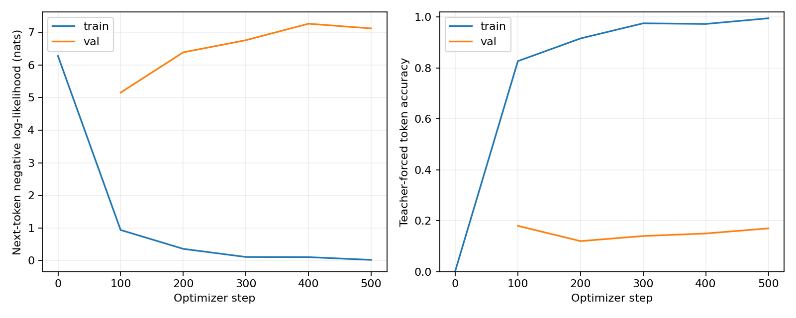

32-image fixed-caption overfit pilot
This is a pipeline and memorization check. Eight validation images are too few to
establish generalization. Validation uses the pilot's training-only word vocabulary;
unknown words limit interpretation. No reserved test images were evaluated.
Final step: 500. Median step time: 0.297 s. Peak GPU memory: not measured (CPU run).

| Split | Image condition | NLL | Token accuracy | Exact generation |
|---|
| train | correct | 0.0196 | 99.5% | 93.8% |
| train | shuffled | 0.7945 | 88.9% | 0.0% |
| train | zero_content | 0.6886 | 89.6% | 3.1% |
| val | correct | 7.1247 | 17.0% | 0.0% |
| val | shuffled | 7.1901 | 16.0% | 0.0% |
| val | zero_content | 7.3832 | 15.0% | 0.0% |
Shuffled images use a fixed one-position rotation with no self-matches. Zero-content replaces raw cached features with zeros and retains adapter bias, spatial positions, and image-type embedding. Exact match includes EOS and uses tokenized captions.
Validation unknown-token rate: 27.2%.
Free generations
train: COCO 197336
Reference: Eight different types and sizes of paira of scissors on a red table.
correct: eight different types and sizes of paira of scissors on a red table .
shuffled: a very green bench that is in some grass .
zero_content: a train car door with a orange stripe going across it .
train: COCO 311192
Reference: A basball player prepares to hit a baseball
correct: a basball player prepares to a baseball
shuffled: eight different types and sizes of paira of scissors on a red table .
zero_content: a train car door with a orange stripe going across it .
train: COCO 89181
Reference: Guy playing in the park with his friends jumps to catch the frisbee
correct: guy playing in the park with his friends jumps to a baseball
shuffled: a basball player prepares to a baseball
zero_content: a train car door with a orange stripe going across it .
train: COCO 33838
Reference: Teenagers siting on crates are gathered around a small campfire.
correct: teenagers siting on crates are gathered around a small campfire .
shuffled: guy playing in the park with his friends jumps to a baseball
zero_content: a train car door with a orange stripe going across it .
train: COCO 496513
Reference: A fancy desert on a plate with a twisted orange.
correct: a fancy desert on a plate with a twisted orange .
shuffled: teenagers siting on crates are gathered around a small campfire .
zero_content: a train car door with a orange stripe going across it .
train: COCO 268266
Reference: A traffic light sitting next to a freeway over pass.
correct: a traffic light sitting next to a freeway over pass .
shuffled: a fancy desert on a plate with a twisted orange .
zero_content: a train car door with a orange stripe going across it .
train: COCO 270683
Reference: A snowboarder making a jump, with the view of a city in the background.
correct: a snowboarder making a jump , with the view of a city in the background .
shuffled: a traffic light sitting next to a freeway over pass .
zero_content: a train car door with a orange stripe going across it .
train: COCO 556462
Reference: Panini and fries are are on a lunch platter are served with dressings.
correct: panini and fries are are on a lunch platter are served with dressings .
shuffled: a snowboarder making a jump , with the view of a city in the background .
zero_content: a train car door with a orange stripe going across it .
train: COCO 163771
Reference: A chocolate piece of cake is sitting on a plate next to a napkin and fork.
correct: a chocolate piece of cake is sitting on a plate next to a napkin and fork .
shuffled: panini and fries are are on a lunch platter are served with dressings .
zero_content: a train car door with a orange stripe going across it .
train: COCO 368855
Reference: A little girl standing at a table in front of a pizza.
correct: a little girl standing at a table in front of a pizza .
shuffled: a chocolate piece of cake is sitting on a plate next to a napkin and fork .
zero_content: a train car door with a orange stripe going across it .
train: COCO 469595
Reference: A train car door with a orange stripe going across it.
correct: a train car door with a orange stripe going across it .
shuffled: a little girl standing at a table in front of a pizza .
zero_content: a train car door with a orange stripe going across it .
train: COCO 152461
Reference: a close up of a street sign with a plane in the background
correct: a close up of a street sign with a plane in the background
shuffled: a train car door with a orange stripe going across it .
zero_content: a train car door with a orange stripe going across it .
train: COCO 461507
Reference: A brown bear stands among ferns in a forest.
correct: a brown bear stands among ferns in a forest .
shuffled: a close up of a street sign with a plane in the background
zero_content: a train car door with a orange stripe going across it .
train: COCO 67823
Reference: a close up of a scooter parked indoors
correct: a close up of a scooter parked indoors
shuffled: a brown bear stands among ferns in a forest .
zero_content: a train car door with a orange stripe going across it .
train: COCO 169352
Reference: A laptop computer sitting on a black desk next to a bowl.
correct: a laptop computer sitting on a black desk next to a bowl .
shuffled: a close up of a scooter parked indoors
zero_content: a train car door with a orange stripe going across it .
train: COCO 398523
Reference: A stop sign on a wooden pole in the water.
correct: a stop sign on a wooden pole in the water .
shuffled: a laptop computer sitting on a black desk next to a bowl .
zero_content: a train car door with a orange stripe going across it .
train: COCO 168998
Reference: A woman holding a plate eating a large slice of pizza.
correct: a woman holding a plate eating a large slice of pizza .
shuffled: a stop sign on a wooden pole in the water .
zero_content: a train car door with a orange stripe going across it .
train: COCO 301634
Reference: a group of vehicles parked next to a firehydrant
correct: a group of vehicles parked next to a firehydrant
shuffled: a woman holding a plate eating a large slice of pizza .
zero_content: a train car door with a orange stripe going across it .
train: COCO 43331
Reference: Vehicles parked under a tree in a small yard.
correct: vehicles parked under a tree in a small yard .
shuffled: a group of vehicles parked next to a firehydrant
zero_content: a train car door with a orange stripe going across it .
train: COCO 524387
Reference: A white plate holding a piece of cake and frosting.
correct: a white plate holding a piece of cake and frosting .
shuffled: vehicles parked under a tree in a small yard .
zero_content: a train car door with a orange stripe going across it .
train: COCO 265725
Reference: A baseball player holding a bat on a field.
correct: a baseball player holding a bat on a field .
shuffled: a white plate holding a piece of cake and frosting .
zero_content: a train car door with a orange stripe going across it .
train: COCO 237188
Reference: A man and two dogs walking through thigh high snow.
correct: a man and two dogs walking through thigh high snow .
shuffled: a baseball player holding a bat on a field .
zero_content: a train car door with a orange stripe going across it .
train: COCO 484401
Reference: an orange and white cat some books and a rug
correct: an orange and white cat some books and a rug
shuffled: a man and two dogs walking through thigh high snow .
zero_content: a train car door with a orange stripe going across it .
train: COCO 482195
Reference: A pan filled with a pastry topped with different types of vegetables.
correct: a pan filled with a pastry topped with different types of vegetables .
shuffled: an orange and white cat some books and a rug
zero_content: a train car door with a orange stripe going across it .
train: COCO 417854
Reference: A baseball player holding a bat standing on a field.
correct: a baseball player holding a bat standing on a field .
shuffled: a pan filled with a pastry topped with different types of vegetables .
zero_content: a train car door with a orange stripe going across it .
train: COCO 343650
Reference: Downward looking view of two people having espresso and cake
correct: downward looking view of two people having espresso and cake
shuffled: a baseball player holding a bat standing on a field .
zero_content: a train car door with a orange stripe going across it .
train: COCO 323919
Reference: a close up ofa small stuffed animal on the grill of a car
correct: a close up ofa small stuffed animal on the grill of a car
shuffled: downward looking view of two people having espresso and cake
zero_content: a train car door with a orange stripe going across it .
train: COCO 299023
Reference: a man uses a blender to chop up some food
correct: a man uses a blender to chop up some food
shuffled: a close up ofa small stuffed animal on the grill of a car
zero_content: a train car door with a orange stripe going across it .
train: COCO 86140
Reference: A person in light blue coveralls snow skis down a white hill.
correct: a person in light blue coveralls snow skis down a white hill .
shuffled: a man uses a blender to chop up some food
zero_content: a train car door with a orange stripe going across it .
train: COCO 554382
Reference: A brick wall with a sign that reads "church passage."
correct: a brick wall with a sign that reads " church passage . "
shuffled: a person in light blue coveralls snow skis down a white hill .
zero_content: a train car door with a orange stripe going across it .
train: COCO 501661
Reference: Small train coming out of a tunnel on an overpass.
correct: small train coming out of a tunnel on an overpass .
shuffled: a brick wall with a sign that reads " church passage . "
zero_content: a train car door with a orange stripe going across it .
train: COCO 282176
Reference: A very green bench that is in some grass.
correct: a very green bench that is in some grass .
shuffled: small train coming out of a tunnel on an overpass .
zero_content: a train car door with a orange stripe going across it .
val: COCO 562561
Reference: Two dogs in the backyard with blowup toys.
correct: a close up of a scooter parked indoors
shuffled: a stop sign on a wooden pole in the water .
zero_content: a train car door with a orange stripe going across it .
val: COCO 82986
Reference: Two men watch another throw a Frisbee in a field.
correct: a man uses a blender to chop up some food
shuffled: a close up of a scooter parked indoors
zero_content: a train car door with a orange stripe going across it .
val: COCO 180487
Reference: GUY WITH UMBRELLA HAT SITTING A TABLE WITH ANOTHER PERSON
correct: a group of vehicles parked next to a firehydrant
shuffled: a man uses a blender to chop up some food
zero_content: a train car door with a orange stripe going across it .
val: COCO 242287
Reference: A bicycle that is resting upon the wall of a building.
correct: a basball player prepares to a baseball
shuffled: a group of vehicles parked next to a firehydrant
zero_content: a train car door with a orange stripe going across it .
val: COCO 298994
Reference: The vegetable are laid out neatly at the table.
correct: a basball player prepares to a baseball
shuffled: a basball player prepares to a baseball
zero_content: a train car door with a orange stripe going across it .
val: COCO 502737
Reference: A person holding up a chocolate doughnut with a face drawn on it.
correct: a man uses a blender to chop up some food
shuffled: a basball player prepares to a baseball
zero_content: a train car door with a orange stripe going across it .
val: COCO 357081
Reference: A photograph of two cows grazing on a green pasture.
correct: a close up of a street sign with a plane in the background
shuffled: a man uses a blender to chop up some food
zero_content: a train car door with a orange stripe going across it .
val: COCO 377670
Reference: Teddy bears are re-enacting soldiers on the beach with others looking on.
correct: a stop sign on a wooden pole in the water .
shuffled: a close up of a street sign with a plane in the background
zero_content: a train car door with a orange stripe going across it .